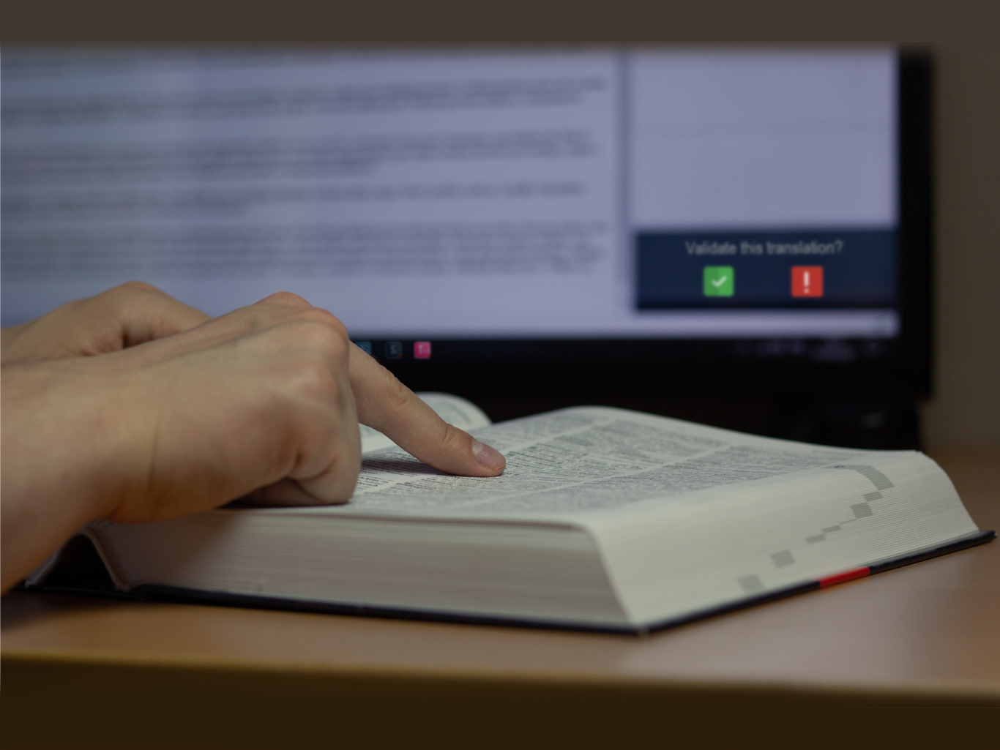

Servizi di traduzione specialistica per l'industria meccanica e l'automazione. Integriamo la traduzione umana certificata ISO 17100 con i processi di post-editing umano ISO 18587 (Light e Full) su contenuti generati da traduzione automatica (MT/AI), garantendo rigore terminologico, massima velocità ed export globale.

L'immissione di una macchina automatica o di un impianto complesso nei mercati internazionali richiede una documentazione tecnica che rispetti rigorosamente le terminologie di settore e i requisiti legali del Paese di destinazione. Una traduzione imprecisa non solo danneggia la reputazione del Brand, ma può generare gravi rischi operativi, blocchi in fase di sdoganamento o ritardi nei collaudi (FAT/SAT).
DUE.ZERO è una struttura certificata UNI EN ISO 17100:2017 (Servizi di Traduzione) e applica i rigorosi standard della norma ISO 18587:2017 per il Post-Editing delle traduzioni automatiche, posizionandosi come partner linguistico integrato per i settori Machinery, Industrial Automation, Packaging, Life Science e Automotive.
Con l'avvento dei motori di Traduzione Automatica (Neural Machine Translation) e dell'Intelligenza Artificiale, l'efficienza produttiva è aumentata, ma la sola tecnologia non garantisce l'affidabilità richiesta da un manuale di sicurezza o da una scheda tecnica industriale.
La norma ISO 18587 definisce i requisiti del processo di Post-Editing (PE) effettuato da linguisti umani professionisti su testi pre-tradotti da sistemi automatici. DUE.ZERO offre due livelli di servizio codificati:
«La norma ISO 18587 garantisce che la velocità dell'Intelligenza Artificiale sia costantemente validata e corretta dalla competenza del revisore umano. In DUE.ZERO, la tecnologia accelera i flussi, ma è il rigore del traduttore madrelingua esperto in meccanica a firmare la qualità e la sicurezza del risultato.»